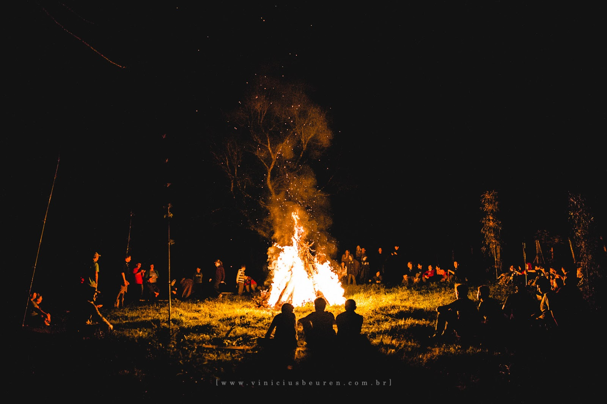

Desbravadores
Igreja Adventista do Sétimo Dia

Quem são?
Os desbravadores são um órgão/departamento da Igreja Adventista do Sétimo Dia (IASD). Os Adventistas são cristãos evangélicos, eles “guardam” o sábado para o descanso, seguindo os ensinamentos da Bíblia usam esse dia para descansar e realizar as suas tarefas como cristãos, todos os dias são para “viver” como um bom cristão, mas o sábado especificamente é dedicado para isso. O departamento dos desbravadores trabalha especificamente com a educação, é reconhecida pelo governo brasileiro como instituição de ensino, focando para a área cultural, social e religiosa. Com relação a faixa etária são para crianças e adolescentes de 10 a 15 anos, abaixo de 10 anos a criança pode entrar em outro departamento da igreja chamado Aventureiros, que basicamente segue os mesmos princípios, mas é tecnicamente mais leve, já para maiores de 15 anos, ainda dentro do departamento dos Desbravadores são chamados de “líderes” que apoiam os desbravadores e organizam o departamento.
Os desbravadores são um órgão/departamento da Igreja Adventista do Sétimo Dia (IASD). Os Adventistas são cristãos evangélicos, eles “guardam” o sábado para o descanso, seguindo os ensinamentos da Bíblia usam esse dia para descansar e realizar as suas tarefas como cristãos, todos os dias são para “viver” como um bom cristão, mas o sábado especificamente é dedicado para isso. O departamento dos desbravadores trabalha especificamente com a educação, é reconhecida pelo governo brasileiro como instituição de ensino, focando para a área cultural, social e religiosa. Com relação a faixa etária são para crianças e adolescentes de 10 a 15 anos, abaixo de 10 anos a criança pode entrar em outro departamento da igreja chamado Aventureiros, que basicamente segue os mesmos princípios, mas é tecnicamente mais leve, já para maiores de 15 anos, ainda dentro do departamento dos Desbravadores são chamados de “líderes” que apoiam os desbravadores e organizam o departamento.
Oque fazem?
E como fazem?
Os desbravadores tem como síntese, ajudar a sociedade, sejam os próprios desbravadores alí envolvidos, e também a comunidade ao redor, sempre envolvidos em campanhas de apoio as comunidades locais. Levando a palavra do advento sempre que passam por um local. Sempre de forma respeitosa e amigavél, levando em consideração, todos os ensinamentos da bíblia.

Ideais dos desbravadores
Voto
Lei
Lema
Alvo
Objetivo
Propósito
Voto a Bíblia
Atividades Comuns
Atividades Físicas
As atividades físicas dos desbravadores acontecem a todo momento, sejam atividades de marcha, esportes, nós e laços, caminhadas, aprender a cuidar do corpo.
As atividades físicas dos desbravadores acontecem a todo momento, sejam atividades de marcha, esportes, nós e laços, caminhadas, aprender a cuidar do corpo.
Atividades Mentais
As atividades mentais dos desbravadores estão divididas em dois seguimentos, o primeiro são atividades que treinam o seu raciocinho lógio, a segunda são atividades que desenvolvem socialmente, emocionalmente e culturamente.

As atividades mentais dos desbravadores estão divididas em dois seguimentos, o primeiro são atividades que treinam o seu raciocinho lógio, a segunda são atividades que desenvolvem socialmente, emocionalmente e culturamente.
Atividades Espirituais
As atividades espirituais dos desbravadores estão fortemente relacionada ao cristianismo, mas não necessariamente é preciso ser cristão para fazer parte da organização, a busca pelo desenvolvimento espiritual está mais relacionado a como você entende que seja o ideal.
As atividades espirituais dos desbravadores estão fortemente relacionada ao cristianismo, mas não necessariamente é preciso ser cristão para fazer parte da organização, a busca pelo desenvolvimento espiritual está mais relacionado a como você entende que seja o ideal.